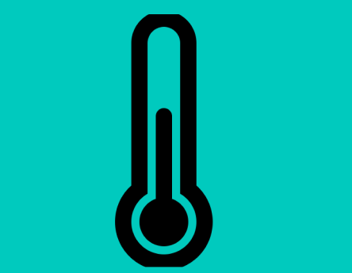

Recomendaciones temperatura
Si la temperatura es alta:
en este caso te recomendamos proporcionar sombras por medio de sombrillas, mallas de sombras, etc.Tambien puedes ajustar la ventilacion abriendo ventanas o puertas que permitan circulación del aire o por medio de ventiladores.
Si la humedad es baja:
En este caso lo mas recomendado es proporcionar calor por medio de calefactores o mantas termicas o la instalación de luces de crecimiento que generen calor